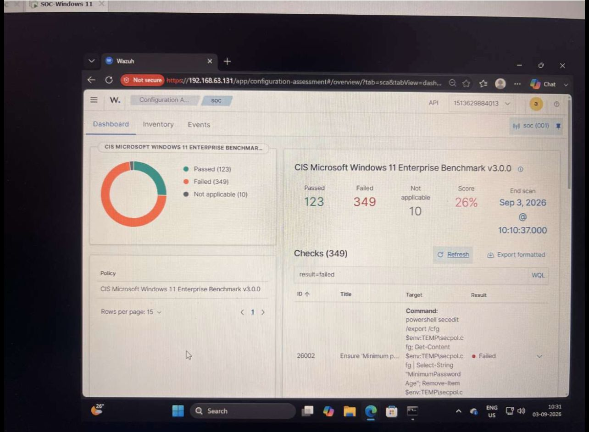

1. Overview
This project demonstrates Windows security monitoring using Wazuh. The objective was to collect Windows security events, monitor authentication activity, identify PowerShell activity, observe process creation and review security-related events through the SIEM dashboard.
The lab was designed to understand how endpoint events are generated, collected and presented to a security analyst for investigation.
Objectives
- Monitor Windows security events.
- Identify successful and failed logon activity.
- Monitor PowerShell activity.
- Monitor process creation events.
- Review Windows Defender events.
- Identify application-related errors.
- Understand potential monitoring blind spots.
2. Tool Configuration
Wazuh was used as the SIEM and endpoint monitoring platform. A Windows endpoint was configured to generate security telemetry that could be collected and analyzed.
Tools Used
- Wazuh
- Windows Event Logs
- Windows Security Events
- PowerShell
- Windows Defender
- Windows Firewall
Important Windows Event IDs
| Event ID | Description |
|---|---|
| 4624 | Successful account logon |
| 4625 | Failed account logon |
| 4688 | New process creation |

Figure 1 — Wazuh dashboard showing collected security telemetry.
3. Test Requests and Lab Simulation
Several controlled activities were performed on the Windows endpoint to generate events that could be observed in Wazuh.
Test 1 — Successful Logon
A normal authentication event was generated and monitored. Windows recorded the successful authentication as Event ID 4624.

Figure 2 — Windows successful logon event, Event ID 4624.
Test 2 — Failed Logon
A controlled failed authentication attempt was performed to verify that unsuccessful authentication activity was visible to the monitoring system.

Figure 3 — Windows failed logon event, Event ID 4625.
Test 3 — PowerShell Activity
PowerShell activity was generated to determine whether the endpoint monitoring configuration could identify and report PowerShell execution.

Figure 4 — PowerShell-related detection observed in Wazuh.
4. SIEM Evidence
The following screenshots document the evidence collected during the monitoring exercise. Each screenshot represents an observed event or monitoring condition.
Application Error

Figure 5 — Application-related event observed during testing.
Windows Defender Event

Figure 6 — Windows Defender security event.
Process Creation

Figure 7 — Windows process creation event, Event ID 4688.
Firewall Monitoring Blind Spot

Figure 8 — Simulated firewall monitoring blind spot.
5. Actual Observations
During the testing, Windows generated multiple security and system events that could be reviewed through the monitoring platform.
- Successful authentication activity was visible through Event ID 4624.
- Failed authentication activity was visible through Event ID 4625.
- PowerShell activity generated detectable telemetry.
- Process creation could be monitored using Event ID 4688.
- Windows Defender events provided additional endpoint security context.
- Application events could also appear in the collected telemetry.
- Some activity may remain difficult to detect when the required logging is not enabled.
Before / After Configuration
| Area | Before | After |
|---|---|---|
| Authentication Monitoring | Limited visibility | 4624/4625 events available |
| PowerShell Monitoring | Limited telemetry | PowerShell activity monitored |
| Process Monitoring | Limited visibility | 4688 process creation events monitored |
| Endpoint Security | Basic visibility | Additional Defender events available |
6. Justified Severity Rating
Authentication Failures — Medium
A small number of failed authentication attempts may be normal, but repeated failures can indicate password guessing or brute-force activity. Therefore, the appropriate severity depends on frequency, source and surrounding activity.
PowerShell Activity — Medium to High
PowerShell is a legitimate administrative tool but is also commonly used during attacks. Suspicious commands, unusual parent processes or encoded commands should increase the investigation priority.
Process Creation — Medium
Process creation by itself is not necessarily malicious. However, unusual processes, suspicious command lines or unexpected parent-child relationships can require further investigation.
Severity should therefore be assigned based on the complete context rather than relying on a single event alone.
7. What Worked and What Did Not Work
What Worked
- Windows security events were collected successfully.
- Authentication activity was visible.
- PowerShell activity could be investigated.
- Process creation telemetry was available.
- Wazuh provided centralized visibility.
What Did Not Work / Limitations
- Not every Windows activity automatically provides sufficient security context.
- Missing or disabled audit policies can create visibility gaps.
- Some events require additional configuration for detailed investigation.
- A single event should not automatically be treated as proof of compromise.
- Firewall-related visibility may be incomplete without appropriate logging.
8. Conclusion
This lab demonstrated how Windows security telemetry can be collected and investigated using Wazuh. Authentication events, PowerShell activity, process creation, Windows Defender events and application events provided useful information for security monitoring.
The exercise also demonstrated the importance of proper logging and configuration. SIEM visibility is only as effective as the telemetry available to the monitoring platform.
From a SOC analyst perspective, the next step after identifying an event would be to correlate it with the user, host, process, timestamp, command line, source address and other related activity before determining whether the event represents malicious behavior.